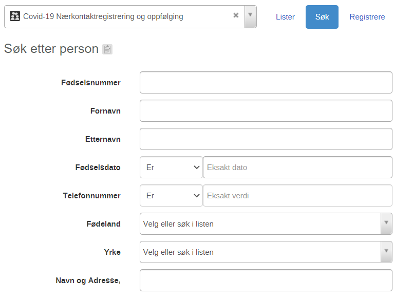

Release notes version 1.17.0
Nye felter i personprofil - nærkontakt og indeks program
I ny versjon har egne felt for vaksine registrering blitt synlig. Dette er plassert nederst i personprofil i begge program.
Arbeidsprosess:
- Gå til tracker capture
- Velg enten indeks eller nærkontaktsregistrering
- Trykk registrer. Du vil nå se nederst at følgende felter har blitt tilgjengelig:
- Type vaksine
- Vaksine 1.dose dato
- Vaksine 2.dose dato
Fødselsnummer i nærkontaktregistreringen er søkbar
I ny versjon er fødselsnummer i nærkontaktsregistrering gjort søkbar - dette var kun i indeksprofil før.

Arbeidsprosess:
- Gå til tracker capture
- Velg enten nærkontaktsregistrering
- Trykk søk. Du vil nå se at følgende felt har blitt søkbar: